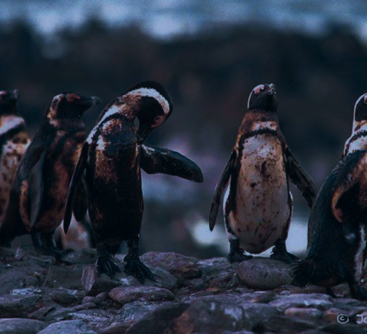

O petróleo, embora seja essencial para a economia global, também apresenta uma série de problemas ambientais, econômicos, sociais e de saúde. Além de causar poluição marinha e contribuir para impactos climáticos, como o aquecimento global, o petróleo é responsável por acidentes ambientais graves, como os desastres do Exxon Valdez e da Deepwater Horizon, que têm consequências de longo prazo para os ecossistemas marinhos e costeiros.

Além disso, o processamento e queima de petróleo contribuem para a poluição do ar, causando problemas de saúde respiratória e contribuindo para a formação de smog em áreas urbanas. A exploração de petróleo também está associada ao desmatamento e à degradação ambiental, resultando na perda de biodiversidade e na degradação dos recursos naturais.


A dependência do petróleo muitas vezes perpetua padrões de desenvolvimento insustentável, incluindo o consumo excessivo de recursos naturais e o crescimento econômico não equitativo, o que pode levar à degradação do meio ambiente, desigualdades sociais e injustiças econômicas. Esses problemas destacam a urgência de buscar alternativas sustentáveis e renováveis para reduzir nossa dependência do petróleo e mitigar seus impactos negativos sobre o meio ambiente, a sociedade e a economia.